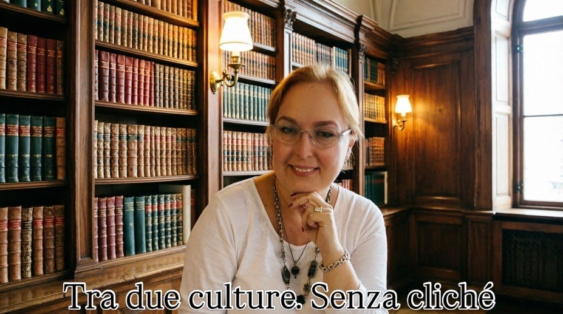

"Tra due culture" racconta una storia spesso poco conosciuta: quella del dialogo tra Italia e Russia. Nei secoli, artisti, architetti, musicisti, scrittori e intellettuali hanno attraversato i confini, contribuendo a creare un patrimonio culturale condiviso. Eppure questi intrecci sono raramente al centro del racconto: il progetto cerca di riportarli alla luce, mostrando come le due culture siano molto più vicine di quanto comunemente si creda.
Il racconto si sofferma sulle figure che hanno lasciato un'impronta significativa nella storia culturale russa: dagli architetti italiani, come Aristotele Fioravanti, Bartolomeo Rastrelli e Giacomo Quarenghi, ai protagonisti degli scambi letterari, artistici e musicali che hanno arricchito il dialogo tra i due Paesi. Ogni racconto nasce da un'attenta ricerca ed è proposto con un linguaggio chiaro e accessibile, nel rispetto del rigore storico.
Il progetto si rivolge a chi desidera conoscere la Russia attraverso la sua cultura, andando oltre gli stereotipi e le semplificazioni. Si trovano storie poco note, curiosità documentate, biografie, opere d'arte e testimonianze che raccontano secoli di relazioni tra Italia e Russia, facendo emergere un patrimonio comune spesso dimenticato.
L'autrice

Oxana Senchenko Pasqualino di Marineo è nata a Mosca ma da oltre trent'anni vive in Italia, portando con sé la cultura russa nella quale è nata e si è formata. È laureata in Lettere italiane all'Università di Mosca ed è arrivata in Italia per insegnare russo all'Università di Verona. Nel corso degli anni ha lavorato come interprete, traduttrice, addetta commerciale, responsabile ufficio stampa e giornalista: un percorso che le ha permesso di conoscere profondamente entrambe le realtà culturali.
Segui "Tra due culture" su Instagram e Facebook.